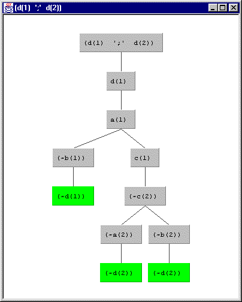
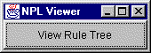

Consider again rulebase R2 from Section 6.5 ...
and consider the rule tree generated for the goal d(1)|d(2):a(X) | b(X) :- c(X). d(X) :- a(X). d(X) :- b(X). c(1) | c(2). c(3).
?- ctie((d(1)|d(2)),[],T).T = tree((d(1) ';' d(2)),tree(d(1),tree(a(1),(tree(~b(1),ancestor_resolution(~d(1))) ',' tree(c(1),tree(~c(2),(tree(~a(2),ancestor_resolution(~d(2))) ',' tree(~b(2),ancestor_resolution(~d(2))))))))))
yes
Or, using character graphics to display T ...
?- why((d(1)|d(2))).|-- (d(1) ';' d(2))
|-- d(1)
|-- a(1)
|-- ~b(1)
|-- ~d(1)
|-- ancestor resolution
|-- c(1)
|-- ~c(2)
|-- ~a(2)
|-- ~d(2)
|-- ancestor resolution
|-- ~b(2)
|-- ~d(2)
|-- ancestor resolution
yes
The graphical visualization using the Java viewer looks like this
screen snapshot ...

The Prolog program talks to the Java program using a special (and different) kind of tree expression. This tree expression has the form
[<root> # [ <sequence of subtree expressions>]]Many expression forms can be used for trees (including the form exemplified via T above) but this one is particularly easy to parse, and to extract the root and the child subtrees. There is, for example, no need to parse the literals from Prolog, since they can assumed to have been correctly generated and written. The special tree expression for the tree above is as follows (wrapped around for display only):
[(d(1) ';' d(2)) # [[d(1) # [[a(1) # [[(~b(1)) # [[(~d(1)) # []]]],[c(1) # [[(~c(2)) # [[(~a(2)) # [[(~d(2)) # []]]],[(~b(2)) # [[(~d(2)) # []]]]]]]]]]]]]]
Here is the Prolog program to convert to the special tree expression form ...
%%%%%%%%%%%%%%%%%%%%%%%%%%%%%%%%%%%%%%%%%%%%%%%%%%%%%And here is the program for the version of the npl interpreter that produces the special tree expression forms...
%% Construct a Prolog expression which when printed
%% gives a tree expression. The Prolog form of such
%% an expresion is [<root> # [ <sequence of branches>]].
%%%%%%%%%%%%%%%%%%%%%%%%%%%%%%%%%%%%%%%%%%%%%%%%%%%%%% The tree expression operator.
:- op(100,xfx,'#').make_tree_expression(tree(Root,Branches),[Root # ChildList]) :- ! ,
make_list(Branches,ChildList).
make_tree_expression(true, [true # []]) :- ! .
make_tree_expression(ancestor_resolution(X), [X # []]) :- ! .make_list((B,Bs),[Btree | BsTree]) :- ! ,
make_tree_expression(B,Btree),
make_list(Bs,BsTree).
make_list((B),[Btree]) :-
make_tree_expression(B,Btree).
% Let Java display the treeThese programs are in visualize.P. Loading visualize.P also loads npl.P. As before, a normal rulebase is loaded via the know predicate.
visualize(Goal) :-
ctie(Goal,[],Tree),
make_tree_expression(Tree,TreeExpressionList),
tell('tree.txt'),
write(TreeExpressionList),
told,
writeln('<<View Rule Tree>>').% shorthand
vis(Goal) :- visualize(Goal).
This version communicates with Java via the file tree.txt. The PC version for XSB Prolog uses the file communication method because the socket version does not work for Windows. We will discuss the socket version later in this section.
Let us assume that the Prolog programs (npl.P, visualize.P, etc.) are located in c:\logic and that the tree.txt file will be located as c:\logic\tree.txt. Further assume that XSB uses c:\logic as its working directory (so that tree.txt will be written there).
On the Java side let us suppose that grtree.zip is unzipped to c:\grtree. We assume that the reader has jdk1.2.X installed. Start the Java viewer like this
c:\> java -classpath c:\ grtree.NPLviewer c:\logic\tree.txtThis starts the viewer, but at this point only pops up a framed button saying "Show Rule Tree", and looks like this (just a screen snapshot) ...

Start XSB ...
?- [visualize].at which point if one pushes the "View Rule Tree" button the Java viewer will display the rule tree. Subsequent visualize-goals will produce a new tree which can, in turn, be viewed by pushing the button of the Java viewer. Each tree shows in its own frame, and any can be closed individually. Whenever the button is pushed, a frame pops up showing the last tree produced by the npl interpreter.
.....?- know('p2.npl').
yes
?- visualize((d(1)|d(2))).
<<View Rule Tree>>yes
visualize.P -- version using file only
grtree.zip
javadoc -- javadoc for grtree package